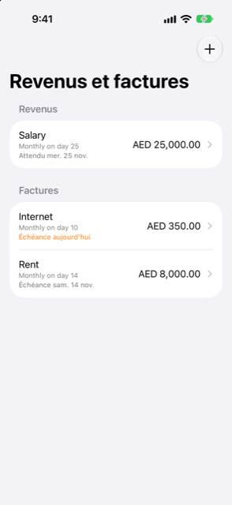

Guide › Planification
Revenus et factures qui se répètent
Salaire, loyer et abonnements : configurez-les une fois.
Revenus et factures récurrentes est la liste dans Plan de tout ce qui se répète : votre salaire, votre loyer, vos abonnements. Configurez chacun une fois, et la prévision le compte selon son calendrier.

Quand l’utiliser
- Vous êtes payé à un rythme régulier et vous voulez que ce soit compté dans la prévision.
- Vous avez des factures qui se répètent : loyer, école, abonnements.
- Damla a remarqué des paiements qui se répètent dans votre historique et vous les propose.
- Un paiement récurrent a été enregistré ou ignoré par erreur et vous devez l’annuler.
Pas à pas
- Ouvrez l’onglet Plan et touchez Revenus et factures.
- Touchez Ajouter (et si rien n’est encore configuré, l’écran propose En ajouter un).
- Choisissez le type : Facture ou Revenus. Le contrôle Type en haut du formulaire fait cela.
- Saisissez un nom, le montant et le compte par lequel il passe (Payé depuis pour une facture, Versé sur pour un revenu).
- Si le montant change, activez Le montant varie et saisissez un montant le plus bas et un plus haut au lieu d’un seul chiffre.
- Choisissez Répétition : Tous les mois, Toutes les semaines, Toutes les 2 semaines, Tous les 3 mois, Tous les 6 mois, Tous les ans, Personnalisé… pour n’importe quel rythme (tous les N jours, semaines, mois ou années), ou Une fois.
- Si cela se termine, activez S’arrête après un certain nombre de paiements et définissez combien. Le champ de date affiche alors Premier paiement.
- Pour un revenu, choisissez Niveau de certitude : Fixe : arrive à temps, Variable : utiliser le plus bas récent, ou Irrégulier : compter seulement à la réception.
- Touchez Enregistrer.
Garder la liste à jour
La liste est triée avec ce qui est dû le plus tôt en premier, sous les sections Revenus et Factures. Chaque ligne montre son nom, son rythme et où elle en est : Échéance aujourd’hui ou Échéance demain en orange quand une facture est là, En retard en rouge quand elle est passée, ou la date suivante. Pour un revenu, les mêmes lignes indiquent Attendu aujourd’hui ou Attendu demain.
Trouvé dans votre historique
En haut de la liste, Damla montre des paiements qu’il a remarqués récurrents dans votre historique, avec un montant et un rythme réguliers. Chacun a un bouton Ajouter qui le met dans votre prévision ; balayez-en un et touchez Pas une facture si ce n’en est pas une. Rien n’est ajouté depuis l’historique sans votre toucher.
Quand une facture est due
- Une facture ou un revenu dû demain, aujourd’hui ou en retard, et pas encore enregistré, apparaît sur Aujourd’hui sous Échéance. Une ligne sous À venir ouvre l’élément derrière elle quand il y en a un : une facture ou un revenu ouvre sa page, une facture de carte ouvre sa feuille de paiement, un achat échelonné ouvre son plan.
- Ouvrez l’élément pour voir quand il est dû ensuite, puis ajustez le montant, la date, le compte ou la catégorie si cette fois c’est différent.
- Touchez Marquer comme payé (ou Marquer comme reçu pour un revenu). Damla ajoute la transaction, marque celui-ci comme fait et avance la prochaine date d’échéance. Il dit ce qu’il a enregistré et ferme l’écran.
- Activez Utiliser ces informations désormais pour garder un nouveau montant ou compte pour les prochaines fois aussi.
- Touchez Ignorer celui-ci s’il n’est pas venu cette fois : il est marqué comme fait sans rien enregistrer.
- Vous pouvez enregistrer en avance. Si le prochain n’est pas dû avant plus d’une semaine, Damla demande avant d’enregistrer (« Oui, je l’ai payé en avance » / « Oui, je l’ai reçu »), pour qu’un second toucher n’enregistre pas celui du mois prochain par accident.
- Si un paiement pour ce montant figure déjà dans vos comptes (d’un texto de banque, par exemple), la facture est considérée comme payée et aucun rappel n’apparaît.
Bon à savoir
- Niveau de certitude compte pour la ligne prudente de la prévision : un revenu fixe est compté comme vous l’avez dit, Variable utilise le montant le plus bas récent, et Irrégulier n’est compté qu’une fois réellement reçu. La ligne prudente retarde ou rabote les revenus qui ne sont pas fixes.
- Balayez une ligne et touchez Supprimer pour la retirer ; utilisez Modifier sur sa page pour en changer quoi que ce soit.
- La page de l’élément garde une courte section Enregistré ici : les derniers paiements enregistrés pour lui.
- Une échéance de prêt marquée payée ici rembourse le prêt ; elle n’est pas comptée comme une dépense.
À voir aussi
Quelque chose n’est pas clair ou manque ? Écrivez à support@raveniq.ai en indiquant la page.